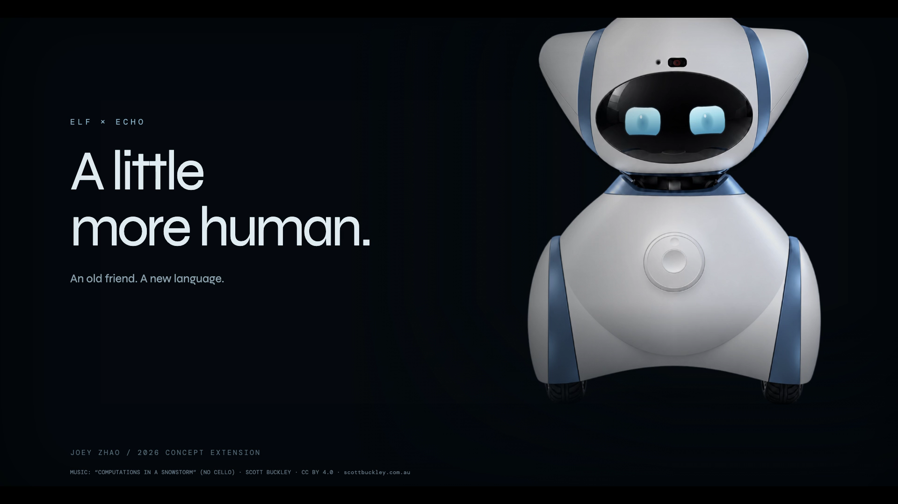

ELF × ECHO — A Little More Human
A 2026 expression study by Joey Zhao, extending the original ELF campus companion and Old Friend concept.
Enable JavaScript for six interactive expressions and the 40-second English showcase film.

Back to Joey Zhao’s portfolio